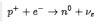

Agujero negro
- Es una región finita del espacio en cuyo interior posee una concentración de masa lo suficientemente elevada como para generar un campo gravitatorio tal, que ninguna partícula –ni siquiera la luz–puede escapar de él (en 2021 se observaron reflejos de luz en la parte más lejana del agujero negro). 2 Los agujeros negros pueden ser capaces de emitir un tipo de radiación, la radiación de Hawking, conjeturada por Stephen Hawking en la década de 1970. La radiación emitida por agujeros negros como Cygnus X-1 no procede del propio agujero negro sino de su disco de acreción.3 La gravedad de un agujero negro, o «curvatura del espacio-tiempo», provoca una singularidad envuelta por una superficie cerrada, llamada horizonte de sucesos. Esto es previsto por las ecuaciones del campo de Einstein. El horizonte de sucesos separa la región del agujero negro del resto del universo, y una vez dentro de él, ningún tipo de partícula, sea material o electromagnética, puede salir, ni siquiera los fotones. Dicha curvatura es estudiada por la relatividad general, la que predijo la existencia de los agujeros negros y fue su primer indicio. En la década de 1970, Stephen Hawking, Ellis y Penrose demostraron varios teoremas importantes sobre la ocurrencia y geometría de los agujeros negros.4 Previamente, en 1963, Roy Kerr había demostrado que en un espacio-tiempo de cuatro dimensiones todos los agujeros negros debían tener una geometría cuasiesférica determinada por tres parámetros: su masa M, su carga eléctrica total e y su momento angular L. Se conjetura que en el centro de la mayoría de las galaxias, entre ellas la Vía Láctea, hay agujeros negros supermasivos.5 El 11 de febrero de 2016, las colaboraciones LIGO, Virgo y GEO600 anunciaron la primera detección de ondas gravitacionales, producidas por la fusión de dos agujeros negros a unos 410 millones de pársecs, megapársecs o Mpc, es decir, a unos 1337 millones de años luz, mega-años luz o Mal de la Tierra.6 Las observaciones demostraron la existencia de un sistema binario de agujeros negros de masa estelar y la primera observación de una fusión de dos agujeros negros de un sistema binario. Anteriormente, la existencia de agujeros negros estaba apoyada en observaciones astronómicas de forma indirecta, a través de la emisión de rayos X por estrellas binarias y galaxias activas. La gravedad de un agujero negro puede atraer el gas que se encuentra a su alrededor, que se arremolina y calienta a temperaturas de hasta 12 000 000 °C, esto es, 2000 veces mayor temperatura que la de la superficie del Sol.7 El 10 de abril de 2019, el consorcio internacional Telescopio del Horizonte de Sucesos presentó la primera imagen jamás capturada de un agujero negro supermasivo ubicado en el centro de la galaxia M87.89
Proceso de formación
Los agujeros negros se forman en un proceso de colapso gravitatorio que fue ampliamente estudiado a mediados de siglo xx por diversos científicos, particularmente Robert Oppenheimer, Roger Penrose y Stephen Hawking, entre otros. Hawking, en su libro divulgativo Historia del tiempo: del Big Bang a los agujeros negros (1988), repasa algunos de los hechos bien establecidos sobre la formación de agujeros negros.
Este proceso comienza después de la "muerte" de una gigante roja (estrella de 10 a 25 o más veces la masa del Sol), entendiéndose por "muerte" la extinción total de su energía. Tras varios miles de millones de años de vida, la fuerza gravitatoria de dicha estrella comienza a ejercer fuerza sobre sí misma originando una masa concentrada en un pequeño volumen, convirtiéndose en una enana blanca. En este punto, dicho proceso puede proseguir hasta el colapso de dicho astro por la autoatracción gravitatoria que termina por convertir a esta enana blanca en un agujero negro. Este proceso acaba por reunir una fuerza de atracción tan fuerte que atrapa hasta la luz en éste.
En palabras más simples, un agujero negro es el resultado final de la acción de la gravedad extrema llevada hasta el límite posible. La misma gravedad que mantiene a la estrella estable, la empieza a comprimir hasta el punto que los átomos comienzan a aplastarse. Los electrones en órbita se acercan cada vez más al núcleo atómico y acaban fusionándose con los protones, formando más neutrones mediante el proceso:

Este proceso comportaría la emisión de un número elevado de neutrinos. El resultado final es una estrella de neutrones. En este punto, dependiendo de la masa de la estrella, el plasma de neutrones dispara una reacción en cadena irreversible, la gravedad aumenta enormemente al disminuirse la distancia que había originalmente entre los átomos. Las partículas de neutrones implosionan, aplastándose más, logrando como resultado un agujero negro, que es una región del espacio-tiempo limitada por el llamado horizonte de sucesos. En la actualidad todavía se desconoce lo que sucede con la materia que cae en el agujero negro atravesando este límite, porque para escalas pequeñas solo una teoría cuántica de la gravedad podría explicarlos adecuadamente, pero no existe una formulación completamente consistente con dicha teoría.
Horizonte de Sucesos
En relatividad general, el horizonte de sucesos —también llamado horizonte de eventos— se refiere a una hipersuperficie frontera del espacio-tiempo, tal que los eventos a un lado de ella no pueden afectar a un observador situado al otro lado.1 Obsérvese que esta relación no tiene por qué ser simétrica o biyectiva, es decir, si A y B son las dos regiones del espacio tiempo en que el horizonte de sucesos divide el espacio, A puede no ser afectada por los eventos dentro de B, pero los eventos de B generalmente sí son afectados por los eventos en A. Por dar un ejemplo concreto, la luz emitida desde dentro del horizonte de sucesos jamás podría alcanzar a un observador situado fuera, pero un observador dentro podría observar los sucesos del exterior.2 Existen diversos tipos de horizontes de eventos, y estos pueden aparecer en diversas circunstancias. Una de ellas particularmente importante sucede en presencia de agujeros negros, aunque este no es el único tipo de horizonte de sucesos posible, existiendo además horizontes de Cauchy, horizontes de Killing, horizontes de partícula u horizontes cosmológicos.
Horizonte de sucesos de un agujero negro rotativo.
El horizonte de sucesos es una superficie imaginaria de forma esférica que rodea a un agujero negro, en la cual la velocidad de escape necesaria para alejarse del mismo coincide con la velocidad de la luz. Por ello, ninguna cosa dentro de él, incluyendo los fotones, puede escapar debido a la atracción de un campo gravitatorio extremadamente intenso. Las partículas del exterior que caen dentro de esta región nunca vuelven a salir, ya que para hacerlo necesitarían una velocidad de escape superior a la de la luz y, hasta el momento, la teoría indica que nada puede superarla. Por tanto, no existe modo de observar el interior del horizonte de sucesos, ni de transmitir información hacia el exterior. Esta es la razón por la cual los agujeros negros no tienen características externas visibles de ningún tipo, que permitan determinar su estructura interior o su contenido, siendo imposible establecer en qué estado se encuentra la materia desde que rebasa el horizonte de sucesos hasta que colapsa en el centro del agujero negro. Si cayéramos en un agujero negro, en el momento de atravesar el horizonte de sucesos no notaríamos ningún cambio, ya que no se trata de una superficie material, sino de una frontera imaginaria, alejada de la zona central donde se concentra la masa. La característica peculiar de esta frontera es que representa el punto de no retorno, a partir del cual no puede existir otro suceso más que caer hacia el interior, dando así origen al nombre de esta superficie. Al incluir efectos cuánticos en el horizonte de sucesos, se hace posible la emisión de radiación por parte del agujero negro debido a las fluctuaciones del vacío que dan origen a la denominada: «radiación de Hawking».
Historia

El concepto de un cuerpo tan denso que ni siquiera la luz puede escapar de él fue descrito en un artículo enviado en 1783 a la Royal Society por el geólogo y clérigo inglés John Michell. Por aquel entonces la teoría de Newton de la gravitación y el concepto de velocidad de escape eran muy conocidas. Michell calculó que un cuerpo con una densidad 500 veces mayor a la del Sol, pero con su mismo radio, tendría, en su superficie, una velocidad de escape igual a la de la luz y sería invisible. En 1796, el matemático francés Pierre-Simon Laplace explicó en las dos primeras ediciones de su libro Exposition du Systeme du Monde la misma idea, aunque, al ganar terreno la idea de que la luz era una onda sin masa, en el siglo xix fue descartada en ediciones posteriores.
En 1915, Einstein desarrolló la relatividad general y demostró que la luz era influida por la interacción gravitatoria. Unos meses después, Karl Schwarzschild encontró una solución a las ecuaciones de Einstein, donde un cuerpo pesado absorbería la luz. Se sabe ahora que el radio de Schwarzschild es el radio del horizonte de sucesos de un agujero negro que no gira, pero esto no era bien entendido en aquel entonces. El propio Schwarzschild pensó que no era más que una solución matemática, no física. En 1930, Subrahmanyan Chandrasekhar demostró que un cuerpo con una masa crítica (ahora conocida como límite de Chandrasekhar) y que no emitiese radiación, colapsaría por su propia gravedad porque no habría nada que se conociera que pudiera frenarla (para dicha masa la fuerza de atracción gravitatoria sería mayor que la proporcionada por el principio de exclusión de Pauli). Sin embargo, Eddington se opuso a la idea de que la estrella alcanzara un tamaño nulo, lo que implicaría una singularidad desnuda de materia, y que debería haber algo que inevitablemente pusiera freno al colapso, línea adoptada por la mayoría de los científicos.
En 1939, Robert Oppenheimer predijo que una estrella masiva podría sufrir un colapso gravitatorio y, por tanto, los agujeros negros podrían ser formados en la naturaleza. Esta teoría no fue objeto de mucha atención hasta los años 60, porque, después de la Segunda Guerra Mundial se tenía más interés en lo que sucedía a escala atómica.
En 1967, Stephen Hawking y Roger Penrose probaron que los agujeros negros son soluciones a las ecuaciones de Einstein y que en determinados casos no se podría impedir que se crease un agujero negro a partir de un colapso. La idea de agujero negro tomó fuerza con los avances científicos y experimentales que llevaron al descubrimiento de los púlsares. Poco después, en 1969, John Wheeler10 acuñó el término "agujero negro" durante una reunión de cosmólogos en Nueva York, para designar lo que anteriormente se llamó "estrella en colapso gravitatorio completo".
El 10 de abril de 2019, el consorcio internacional Telescopio del Horizonte de Sucesos presentó la primera imagen jamás capturada de un agujero negro supermasivo ubicado en el centro de la galaxia M87. Se esperaba a su vez el anuncio de otra imagen real de un agujero negro en Sagitario A*; sin embargo, aclararon que no se había obtenido porque la fuente era muy variable durante los periodos de observación, resolviéndose en un futuro.
Clasificación teórica
Según su origen, teóricamente pueden existir al menos dos clases de agujeros negros: Según la mas Agujeros negros supermasivos: con varios millones de masas solares. Se hallarían en el centro de varias galaxias, por ejemplo en la nuestra, llamando ''Satigario A''11. Se forman en el mismo proceso que da origen a los componentes esféricos de las galaxias. Agujeros negros de masa intermedia: (IMBH) es una clase de agujero negro con una masa en el rango de 100 a un millón de masas solares, significativamente más que los agujeros negros estelares, pero menos que los agujeros negros supermasivos. Agujeros negros de masa estelar: Se forman cuando una estrella de más de 30-70 masas solares se convierte en supernova e implosiona. Tienen más de tres masas solares. Su núcleo se concentra en un volumen muy pequeño que cada vez se va reduciendo más. Este es el tipo de agujeros negros postulados por primera vez dentro de la teoría de la relatividad general. Micro agujeros negros: Son objetos hipotéticos, algo más pequeños que los estelares. Si son suficientemente pequeños, pueden llegar a evaporarse en un período relativamente corto mediante emisión de radiación de Hawking. Este tipo de entidades físicas es postulado en algunos enfoques de la gravedad cuántica, pero no pueden ser generados por un proceso convencional de colapso gravitatorio, el cual requiere masas superiores a la del Sol.Según su carga y momento angula Existe un teorema sobre propiedades de los agujeros negros que se suele enunciar diciendo que «un agujero negro no tiene pelo» (en inglés No-hair theorem); el teorema afirma que cualquier objeto que sufra un colapso gravitatorio alcanza un estado estacionario como agujero negro descrito solo por tres parámetros: su masa M, su carga Q y su momento angular J. Considerando estas dos últimas propiedades físicas, tenemos la siguiente clasificación para el estado final de un agujero negro: El agujero negro más sencillo posible es el agujero negro de Schwarzschild, que no rota ni tiene carga. Si no gira pero posee carga eléctrica, se tiene el llamado agujero negro de Reissner-Nordstrøm. Un agujero negro en rotación y sin carga es un agujero negro de Kerr. Si posee rotación y carga, hablamos de un agujero negro de Kerr-Newman. Las cuatro soluciones anteriores pueden sistematizarse de la siguiente manera: